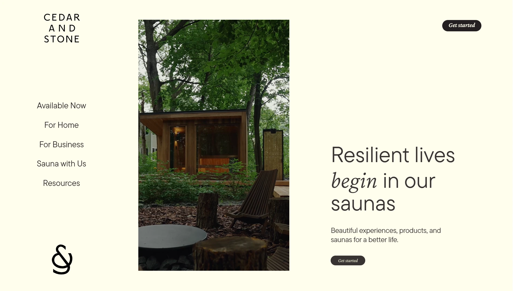
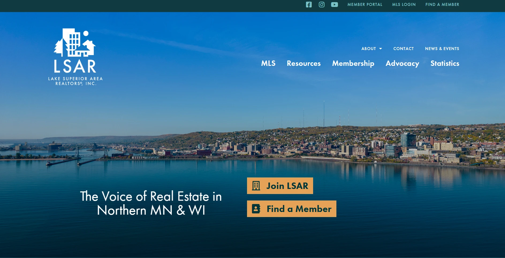
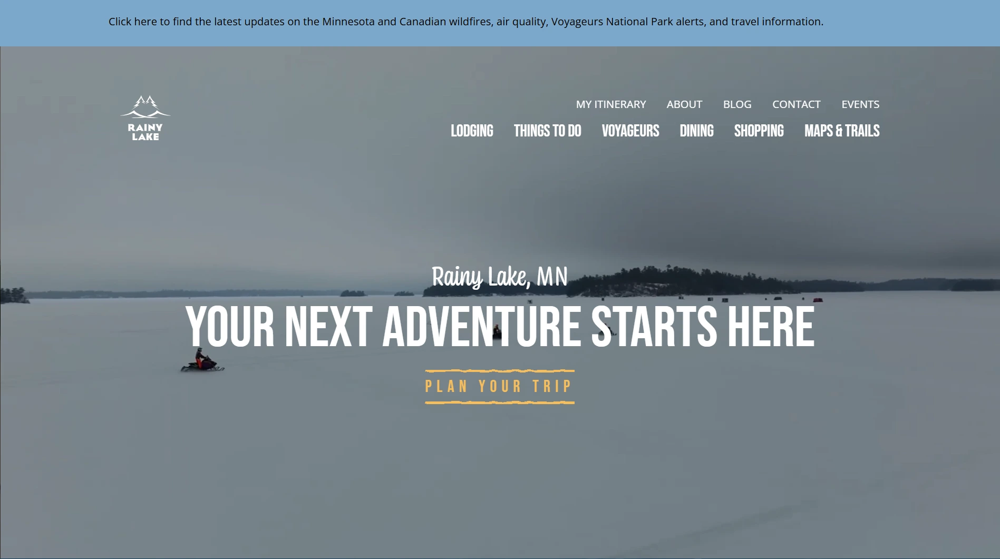
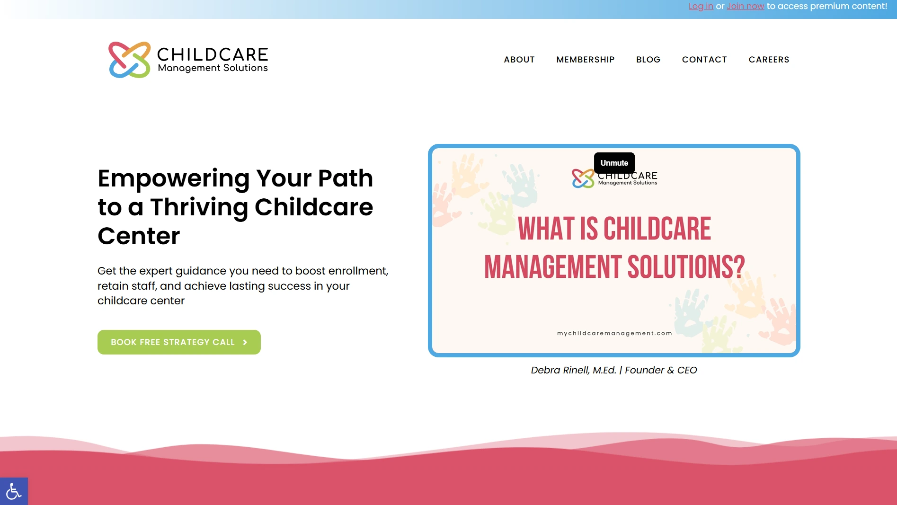
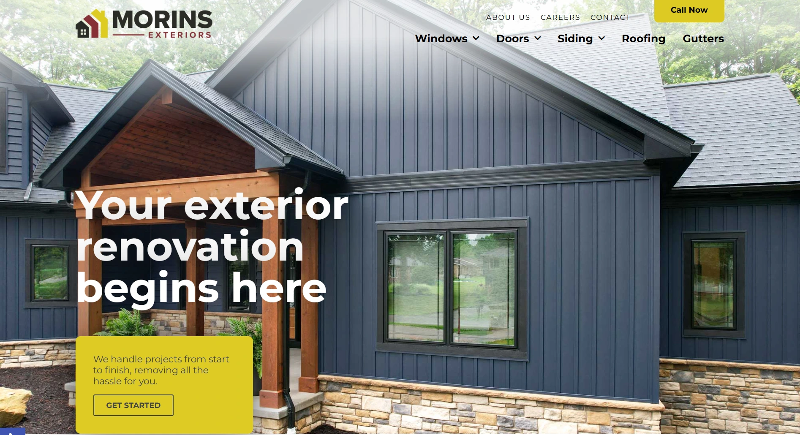
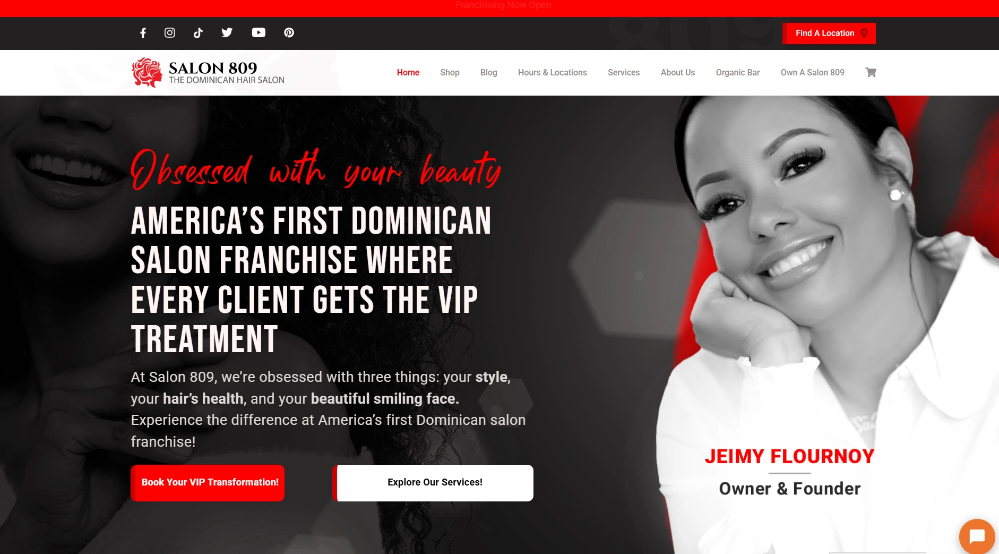
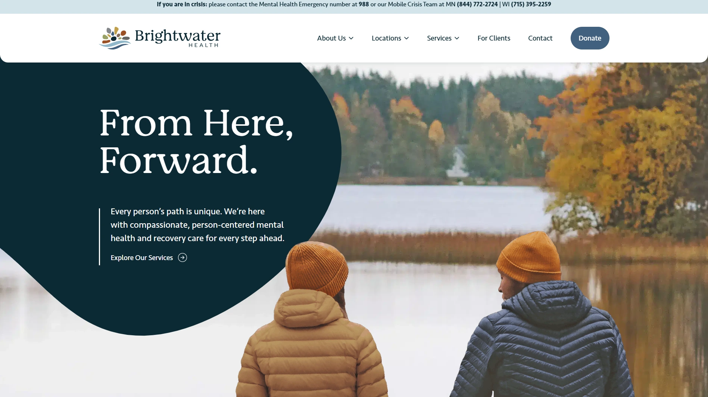

Cedar & Stone
Developed the complete responsive WordPress website from Figma designs, including custom navigation, content layouts, and interactive frontend features.
Live siteWEB DEVELOPER / WORDPRESS / JAVASCRIPT
I'm Hassaan, a web developer specializing in custom WordPress solutions, responsive frontend development, and the technical work that keeps production websites running reliably.
From implementing detailed designs to building complex CMS functionality, I focus on creating websites that work as well as they look.
01 / PORTFOLIO
A selection of websites I've developed or contributed to, spanning custom WordPress builds, dynamic content, frontend interactions, and ongoing improvements.

Developed the complete responsive WordPress website from Figma designs, including custom navigation, content layouts, and interactive frontend features.
Live site
Contributed to WordPress development and custom functionality, including data-driven member information and directory-related workflows.
Live site
Worked on content filtering, AJAX-driven interactions, itinerary functionality, and frontend improvements for a destination website.
Live site
Developed a responsive WordPress website from supplied designs, focusing on clear content presentation, reusable sections, and usability.
Live site
Built responsive Elementor layouts and reusable website sections for an exterior remodeling business, with a focus on clear navigation.
Live site
WordPress development and frontend customization, including responsive layouts and WooCommerce functionality for a beauty business.
Live site
Contributed to WordPress development and responsive interface work for a healthcare organization with extensive service content.
Live site
Contributed to WordPress development, interface improvements, and custom website functionality for a recreation destination.
Live site02 / UNDER THE HOOD
Some of my most involved work happens behind the interface: content architecture, business logic, integrations, and the systems that make websites usable.
Custom WordPress Registration Workflows
Implemented and tested a multi-child program registration experience, bringing together conditional eligibility, event enrollment, waivers, and payment-related workflows.
Complex WordPress CMS Redevelopment
Redeveloped a content-heavy WordPress website using flexible content structures, custom post types, reusable templates, filtering, and membership-related functionality.
03 / CAPABILITIES
A combination of practical frontend development, WordPress customization, and hands-on experience supporting real production websites.
Building responsive interfaces from design files, developing interactive functionality, and refining how websites look and behave across devices.
Implementing custom content structures, dynamic templates, advanced forms, third-party integrations, and PHP-assisted WordPress functionality.
Managing real-world website infrastructure, staging and deployment, migrations, backups, troubleshooting, database maintenance, and recovery.
I also work with C++ and Linux through independent systems programming projects, bringing an interest in programming fundamentals, debugging, and understanding how software works beneath the interface.
THE BOTTOM LINE
They take thoughtful implementation, attention to detail, reliable functionality, and someone who can keep everything working after launch.
Back to selected work